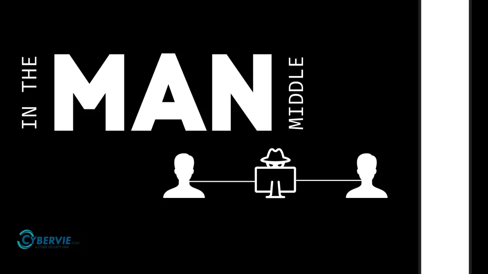

Man in the Middle Angriffe
Man in the Middle Angriffe (MITM)
Man in the Middle (oder MITM) ist ein Angriff, bei dem ein Angreifer heimlich in die Kommunikation zwischen zwei Parteien (zb. Rechner) eingreift. Das Ziel eines MITM-Angriffs ist es, die Daten die gesendet werden zu überwachen, zu verändern oder sogar zu stehlen, ohne dass die beiden beteiligten Parteien davon wissen.
Funktionsweise eines MITM-Angriffs
Ein MITM-Angreifer positioniert sich zwischen zwei Kommunikationspartnern. Es können zb. ein Benutzer und eine Webseite sein, könnte aber auch ein E-Mail-Server oder ein anderes System sein. Der Angreifer kann beispielsweise auch ein öffentliches WLAN-Netzwerk kontrollieren, sodass er den gesamten Netzwerkverkehr abhören kann. Ein MITM-Angriff kann auf verschiedene Arten durchgeführt werden, zum Beispiel durch Packet Sniffing, bei dem der Angreifer Datenpakete abfängt, oder durch DNS-Spoofing, um den Zielverkehr auf die falsche Seite umzuleiten.
Manipulation von Daten
Ein MITM-Angreifer kann nicht nur Daten abfangen, sondern auch verändern. Wenn zum Beispiel ein Benutzer eine Transaktion auf einer Website macht, könnte der Angreifer die Details ändern (zb. den Betrag einer Überweisung) oder den Inhalt von E-Mails umschreiben.
Schutz vor MITM-Angriffen
Um sich vor MITM-Angriffen zu schützen, sollte man immer auf die HTTPS-Verbindung achten, weil diese durch SSL/TLS-Verschlüsselung die Kommunikation zwischen Client und Server sichert. Zertifikate helfen dabei, die Identität des Servers zu überprüfen und sicherzustellen, dass man mit dem richtigen Server kommuniziert und nicht mit einem Angreifer.
Eine weitere Möglichkeit ist die Verwendung von VPNs. VPNs können den ganzen Internetverkehr verschlüsseln und so MITM-Angreifern den Zugriff auf sensible Daten erschweren.
Fazit
MITM-Angriffe sind eine gefährliche Bedrohung für die Privatsphäre und Sicherheit. Durch sichere Verbindungen, Verschlüsselung und wachsamem Verhalten können Nutzer jedoch effektiv verhindern, dass ihre Kommunikation abgefangen oder manipuliert wird.